Overview
- Welcome and Course Organization
- R Basics
- First Visualizations: The Grammar of Graphics with ggplot::
- Collaboration on a Complex Data Project
Course Organization
Lecturers
Dr. Christin Scholz (c.scholz@uva.nl)
Assistant Professor Persuasive Communication
Dr. Xin Gao (x.gao2@uva.nl)
Lecturer Research Methods
Our expectations
- Confidence (in yourself and us)
- Commitment (be pro-active, challenge yourself)
- Curiosity (ask, explore)
Who are you?
Tell us about yourself:
What’s your name?
What is one fun fact about yourself?
Experience Levels
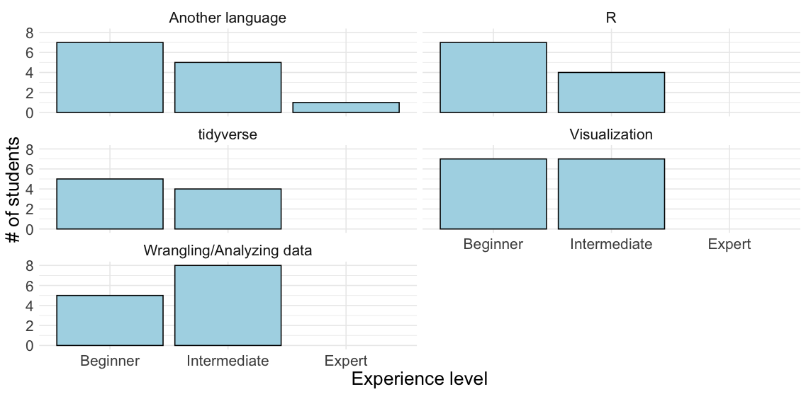
How are you feeling?
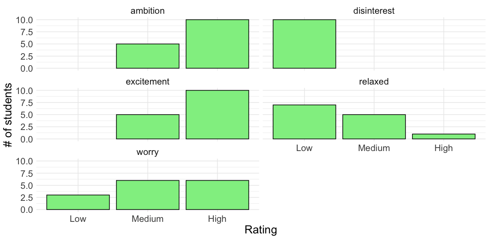
Hours
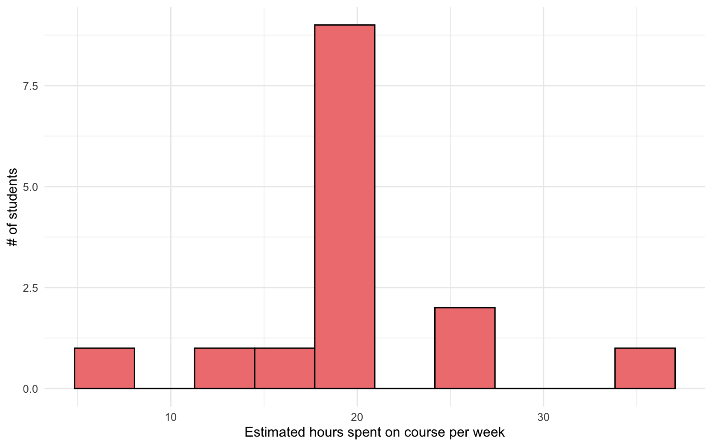
What to Expect
Our Aim: educate self-sufficient, efficient, and confident R users who are able to further develop their skills independently.
We hope you will:
Have a working knowledge of R essentials and be able to get started with your own data.
Understand why R is awesome and integrate it in your regular research workflow.
Develop know-how to quickly find out what you don’t know and keep developing independently.
“Frustration is natural when you start programming in R […]. But while you should expect to be a little frustrated, take comfort in that this experience is typical and temporary: it happens to everyone, and the only way to get over it is to keep trying.” (Wickham et al., 2023)
The Elephant in the Room
Generated by AI using
www.craiyon.com
AI tools are making coding (and life) easier and more convenient by the minute, but to use them effectively, you need a basic proficiency in R. Without basic knowledge, you cannot write good prompts and interpret AI-generated R code. In other words, AI-assisted coding is an advanced skill.
In this class, we are discouraging AI use. You will have to pass the exam without access to AI and the internet. In the Data Project, AI will only be helpful if you have solid skills already.
We will discuss how to effectively use AI tools in the last session of the course.
Materials
Book:
Hadley Wickham, Mine Cetinkaya-Rundel, Garrett Grolemund (2023). R for Data Science. 2nd Edition. O’Reilly.
Online version: https://r4ds.hadley.nz/.
AFTER EXTENSIVE trial and error: online help is available for exercises (e.g. https://mine-cetinkaya-rundel.github.io/r4ds-solutions/)
Additional materials: Canvas
Study the syllabus on Canvas!
The tidyverse approach
We use the tidyverse approach to R programming.
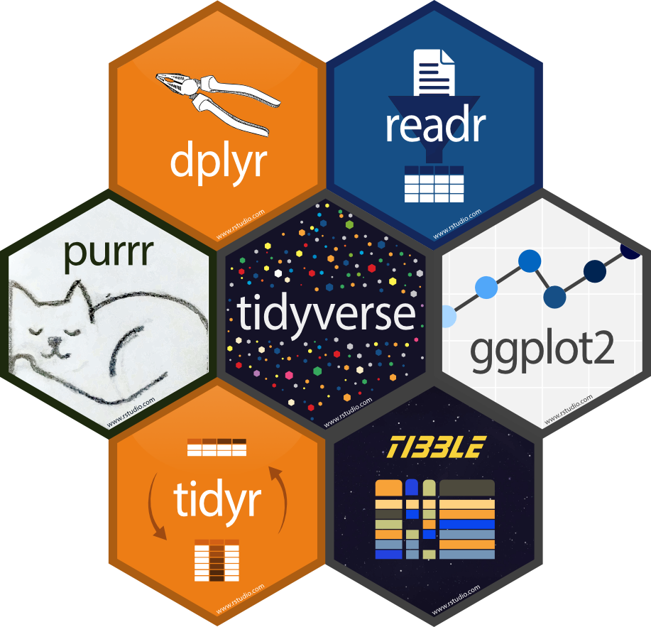
Source: https://r-unimelb.gitbook.io/rbook/into-the-tidyverse/the-tidyverse
The tidyverse suite includes several packages. We will mostly focus on:
- data import: readr::
- data wrangling: dplyr::, tidyr::
- visualization: ggplot2::
Replicable research: Quarto
Cheat sheets!
NOTE: The tidyverse package(s) are loaded in the tutorials, so they can be used.
Topics
| Week | Date | Topics & Chapters |
|---|---|---|
| 1 | Oct 28 | Welcome, Basics, and First Visualizations |
| 1 | Oct 30 | Data Wrangling (dplyr::) & Introduction to Quarto |
| 2 | Nov 4 | Data Tidying 1 |
| 2 | Nov 6 | Data Tidying 2 |
| 3 | Nov 11 | Review and Group Consultations |
| 3 | Nov 13 | Special Types of Data |
| 4 | Nov 18 | Visualization 1 |
| 4 | Nov 20 | Review and Individual Consultations |
| 5 | Nov 25 | Modelling 1 |
| 5 | Nov 27 | Modelling 2 |
| 6 | Dec 2 | Visuzalization 2 |
| 6 | Dec 4 | Programming |
| 7 | Dec 9 | Your Future with R |
| 7 | Dec 11 | Optional Session: Exam Preparation |
Deadlines:
Data Project - Group part: November 19th, 2025, 6 PM
Data Project - Individual part: December 5th, 2025, 6 PM
Exam: December 12th, 2025
Grading
Final grade:
- Data Project - Group Task: reproducible report on tidying a comples dataset (30%)
- Data Project - Individual Task: reproducible report on one data visualization based on the tidied, complex dataset (20%).
- On-Campus Exam (50%)
Exam
The exam consists of a series of coding exercises similar to those in R for Data Science. The exam will be held on campus and fully relies on your knowledge of R, meaning that you are not allowed to use the book and will not have access to the internet. For details, see Syllabus.
Data Project: Tell a visual story
The data project consists of a collective effort (the group part) and an individual effort (the individual part). The two parts will be submitted and graded separately according to the rubric available on Canvas.
Exploratory analysis of a complex data set: Showcase your R skills.
- Groups of 4 or 5 students.
- Group effort: Tidying the dataset.
- Individual effort: Print-ready presentation of one data visualization per student based on the tidy data.
- Reproducible: All steps from raw data to final results (Quarto).
Telling a Visual Story in R
- What’s possible?: https://r-graph-gallery.com/
- Inspiration: Data journalism & Academic Publications
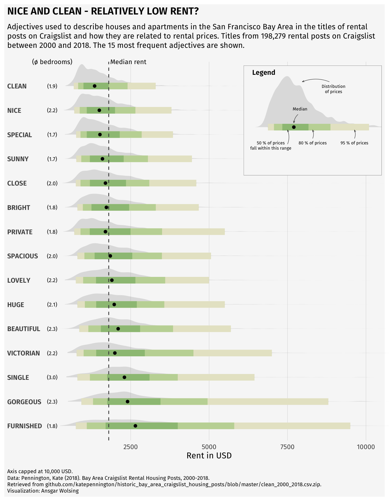
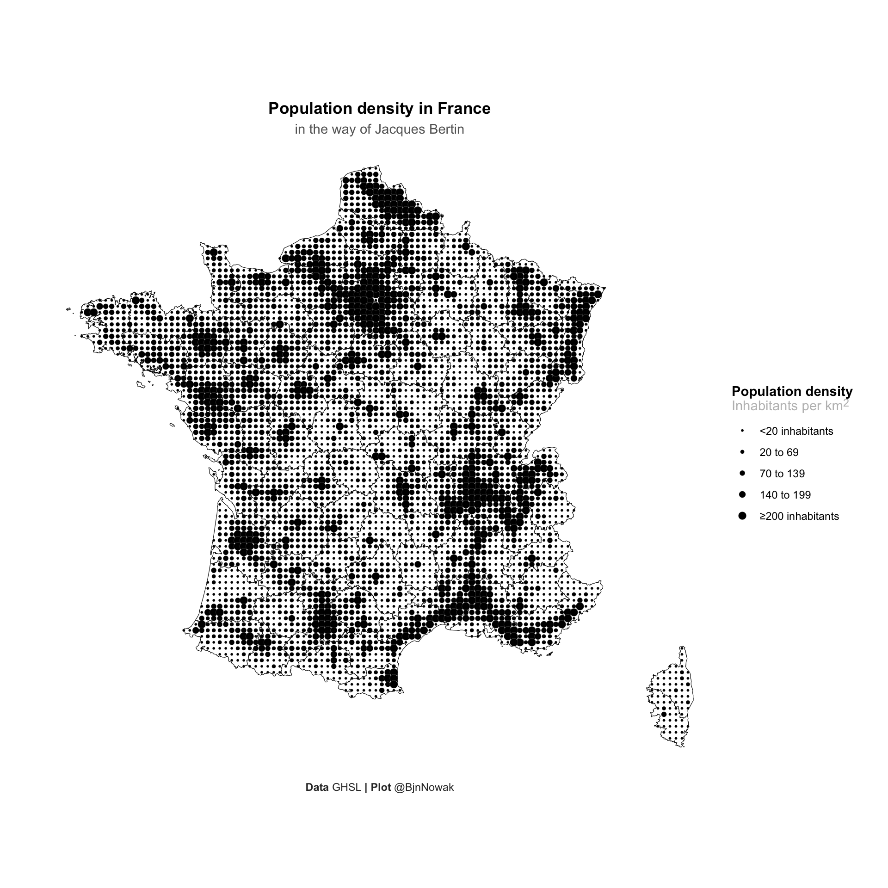
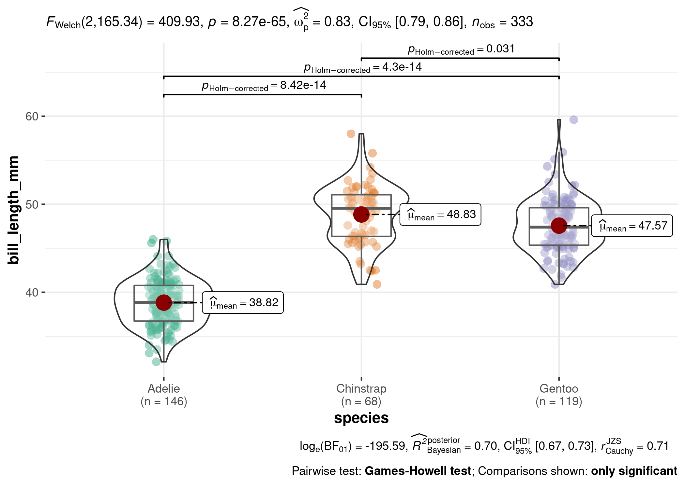
Image source: https://r-graph-gallery.com/best-r-chart-examples.html
A visualization requires a lot of data wrangling:
- Combining: Link data from different sources.
- Selection: Which info do we (not) show?
- Justification: How do we treat missing data?
- Styling: Do we simplify (model) data?
Get inspired…
Some examples of real-world data visualizations:
- fivethirtyeight (https://fivethirtyeight.com/). Some data sets are available in fivethirtyeight R package.
- Pew Research Center, e.g., https://www.pewresearch.org/fact-tank/2019/12/13/19-striking-findings-from-2019/.
Books:
- Edward R. Tufte (1997), Visual Explanations. Images and Quantities, Evidence and Narrative. (A classic)
- Alberto Cairo (2016), The Truthful Art. Data, Charts, and Maps for Communication.
Session Organization
Learning to code effectively means learning by doing!
- Homework (Mondays, with buddy or individually): Prepare for class
- Tutorials: Test yourself, practice, discuss and ask questions
- Some sessions: Review, practice, group work, or Q&A
Study Buddies
…an optional source of knowledge, advice, and support.
Why have a study buddy?
- Peer learning is highly effective.
- R users form a community. Become part of it!
- Learning to program requires moral support.
Recommendations
- Meet at least 1x/week (e.g., during Monday homework hours).
- Read before you meet.
- Discuss the course content, not the group project.
- Formulate questions for class.
We will randomly assign a suggested study buddy to you on Canvas.
SCRUM(-Light)
To help you accomplish the complex group project in the short time we have in this course, we will use an adjusted version of a project management procedure called SCRUM (here: SCRUM-light). This procedure helps you plan and continuously evaluate your work as a group in so-called sprints (1-week intervals).
SCRUM is a framework for managing teamwork in a systematic and empirically informed manner.
What is SCRUM(-Light)?
- 1-week “Sprints”.
- Sprint: Plan, complete tasks, evaluate.
- SCRUM master: Oversees and facilitates the Sprint.
- Planning support on Canvas.
Why SCRUM(-Light)?
- Managing a complex team project is difficult!
- Projects tend to be completed last minute and dominated by some students.
- SCRUM is used by professional teams worldwide.
Process
See Syllabus for Group Work Guide and What-to-do-when list.
Complete short surveys to plan evaluate the previous sprint and plan the upcoming one on Mondays (by 6 PM).
Evaluation
- Group Collaboration Quality criterion (complete/incomplete for 8 planning/evaluation surveys)
Teaming Up for the Data Project
Alcohol Posts and Alcohol Use.
Friends and Families.
EU 2014 elections.
The Canvas “Data Projects Data Sets” page contains the data and data descriptions.
Who will work on which complex dataset (and with whom)?
Submit a list of (~4-5) team members, a team name, and your choice of dataset on the Canvas discussion board.
Questions about the Syllabus?
Welcome to R and RStudio
- R: a programming language for statistical computing and graphics.
- RStudio: an integrated development environment (IDE) for R. In other words: a user-friendly interface for working with R.
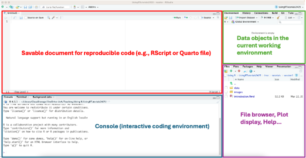
Intermezzo: Tutorial Installation
You installed the latest versions, didn’t you?
In addition, install this tutorial:
- Install the
remotespackage:- Type
install.packages("remotes")in the RStudio console. - Execute the command by pressing Enter/Return.
- Type
- Install the
learnrpackage:install.packages("learnr") - Install the
gradethispackage:remotes::install_github("rstudio-education/gradethis")- This should also install the
learnrpackage. - Be patient! Wait for the message
DONE (gradethis).
- This should also install the
- Install the tutorials:
remotes::install_github("csch0lz/UsingRTutorials_GSC",ref="2025/26")- Answer
noto questionDo you want to install from sources the package which needs compilation?. - Wait for the message
DONE (UsingRTutorials).
- Answer
Start the tutorial
Now you can start the first tutorial:
- Execute the command
learnr::run_tutorial("session1", "UsingRTutorials")in the RStudio console.
Alternatively:
- Restart R (Session > Restart R) to show the tutorials in the RStudio Tutorial tab.
- Click Start Tutorial for tutorial Session 1 in the Tutorial tab. (Takes some time!)
- Show the tutorial in a new window with the
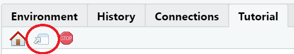
button. - While you are working with the tutorial, you can also work in RStudio.
Using a tutorial
- Tutorials instead of slides.
- Hands-on plenary or individual coding.
- Additional (non-mandatory) materials.
- Reviewing topics after class.
Your tutorial answers are saved until you press Start Over.
Use button in the top right corner of the RStudio console to stop the tutorial.
Make sure you also get plenty of coding practice in the regular R Studio environment during group work and homework exercises.
Coding in R: Using functions
We use functions in R to accomplish something.
function_name(argument_name = value, ...)
Function arguments specify the input for a function:
- Named arguments (more typing, less confusion):
seq(from = 1, to = 5). - Unnamed (less typing, more confusion):
seq(1, 5).
We recommend named arguments (at least in the beginning).
What does the command (below) do? Add the argument names to the arguments in the function.
seq(1, 15, 2)Hint: Use the Help page for this function
(?seq). The help page will open in a browser window. If you
use the help function in RStudio, the help page opens in the
Help tab.
Programming Tips
- Run code and have a look at the output to figure out what the arguments mean.
- Look up the arguments of the function in the Help page or from the code completion options shown when you start typing within the brackets. Hint: In the RStudio interface, put your cursor in the name of a function and press F1 to get help.
- Get used to working with the help() function. You will have access to it during the exam.
- If the code is not valid, R displays an error message when you attempt to run the code. Correct the mistake before you continue.
- Run the updated code to see if the results are what they should be.
Use this programming approach to find out what the
length.out argument means.
seq(1, 15, length.out = )Correct the code below, which should give integer numbers from 10 down to 1.
seq(10, 1, 1)Hint: What does the error message say if you run the code?
Where do the results go?
We can assign the results of a function to a data object:
left_hand_object <- function_name(argument_name = value, ...)
If left-hand data object:
- does not exist: new data object created.
- exists: data object overwritten.
- is not named: output to screen (console or plot area).
In the previous exercises, the function results were sent to the screen.
Now, store the results of the three functions below in data objects
named my_output, my_Output, and
my_output respectively.
seq(from = 1, to = 20, by = 1)
seq(from = 10, to = 20, by = 1)
seq(from = 10, to = 10, by = 1)Hint: Use the <- operator to store results. Spell names correctly. R is case-sensitive: lower case is different from uppercase.
my_output <- seq(from = 1, to = 20, by = 1)
my_Output <- seq(from = 10, to = 20, by = 1)
my_output <- seq(from = 10, to = 10, by = 1)What does the data object my_output contain? Enter the
value(s) below.
Cleaning up
Programming Tip
- The number of data objects in the R environment may grow quickly. It
is good practice to discard data objects that are not needed (anymore).
The base R functions
remove()and, more concisely,rm()remove one or more objects from the environment.
Remove all data objects created in the preceding exercise with one
rm() command.
rm()Hint: Separate data objects with commas. Do not include the same data object name more than once.
rm(my_output, my_Output)Visual Exploration
The trend is towards visualizing data properties rather than tabulating them.
| Gender | Word of mouth | Average brand awareness |
|---|---|---|
| female | no | 5.7 |
| female | yes | 4.9 |
| male | no | 5.1 |
| male | yes | 3.7 |
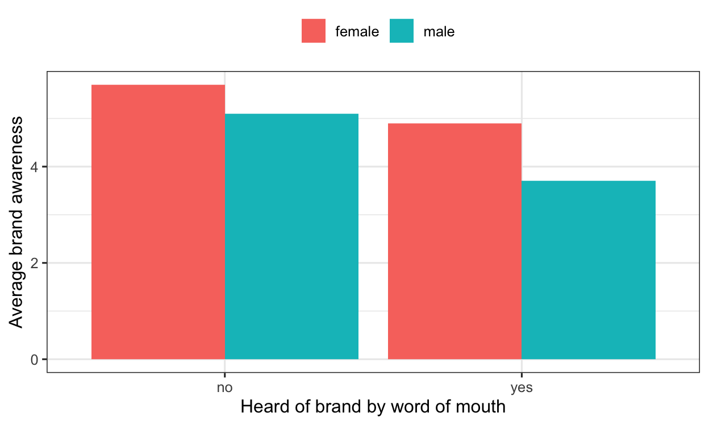
Plots with ggplot()
Philosophy: Grammar of Graphics (Leland Wilkinson)
- Build graph in layers.
- Graphic properties: X, Y, color, size, shape, transparency.
- Each graphic property may express a variable.
- Additional features: statistics, position adjustment, coordinate system, faceting.
Recreate a plot in steps
We will use some (fake) consumers data about a
particular brand and exposure to an advertising campaign for the brand.
These are the variables:
| Variable name | Variable Label | Value Labels |
|---|---|---|
| ad_expo | Exposure to the campaign | 1 = No exposure; 10 = Max exposure |
| wom | Heard about the brand through word of mouth | yes, no |
| gender | Gender of the respondent | female, male |
| brand_aw | Awareness of the brand | 1 = Not aware; 10 = Max aware |
| firstname | Respondent’s first name |

We are going to recreate the above plot in steps.
Step 1: Aesthetics: the plane
- x: horizontal axis (always required).
- y: vertical axis.
Create the plane by specifying the x and y dimensions of the plot.
ggplot(
data = consumers
)Hint: Use the Data Visualization with ggplot
cheat sheet (available from the RStudion Help > Cheat
Sheets menu) if you cannot remember the geom that you need. It is
usually better to specify the x and y coordinates of the plane in the
ggplot() function than in a geom.
ggplot(
data = consumers,
mapping =
aes(x = ad_expo,
y = brand_aw)
)Step 2 - Aesthetics: Attributes
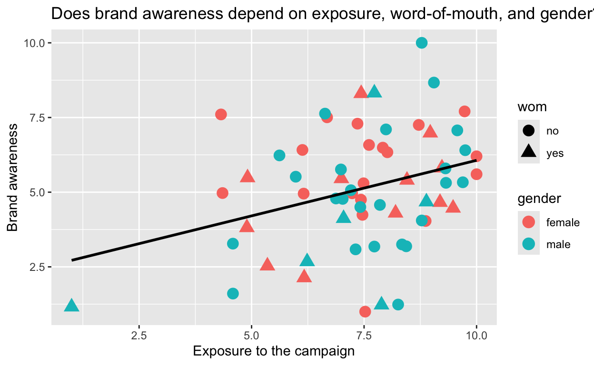
Add dots to represent individual datapoints and set the colour, shape, and size of the dots.
# Copy the solution to the preceding exercise here as your starting point.
ggplot(
data = consumers
)Hint: An aesthetic, such as colour or size, must be
included in the aes() function if it must be linked to a
variable. Each group on the variable then receives its own color.
ggplot(
data = consumers,
mapping =
aes(x = ad_expo,
y = brand_aw)
)+
geom_point(
mapping = aes(shape = wom, color = gender),
size = 4
)Step 3 - Additional layers

Add the linear regression line to the plot.
# Copy the solution to the preceding exercise here as your starting point.
ggplot(
data = consumers
)Hint: Mind the details of the regression line.
ggplot(
data = consumers,
mapping =
aes(x = ad_expo,
y = brand_aw)
)+
geom_point(
mapping = aes(shape = wom, color = gender),
size = 4
) +
geom_smooth(
method = "lm",
se = FALSE,
color = "black"
)There are more advanced details we can improve about this graph. We’ll get back to it in Session 7: Visualization 1.
It’s Your Turn
Let’s look at another dataset called “Motor Trend Car Road Tests”
(mtcars). This dataset describes fuel consumption and ten
other aspects of 32 cars built in the early 70s.
- Call
help(mtcars)to get an overview of the variables. - Use
mtcarsto recreate the plot below.
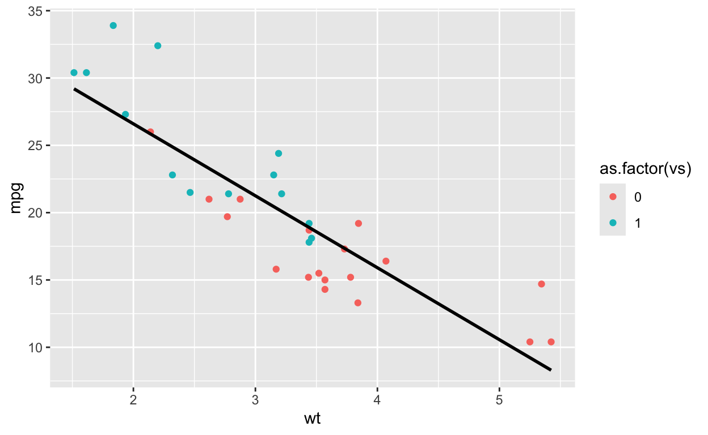
ggplot(
data = mtcars
)Hint: Pay close attention to which visual attributes are mapped to a variable and which are not.
ggplot(
data = mtcars,
mapping = aes(x = wt, y = mpg)) +
geom_point(
mapping = aes(color=as.factor(vs))) +
geom_smooth(
method='lm',
se=FALSE,
color='black') Debugging
Your friend tried to create a non-stacked bar chart showing the proportion of females in the consumers data set who heard by word of mouth against the proportion who did not, as well as the proportion of males who heard and who did not hear by word of mouth.
Your friend did not manage to get the code to work. Can you do that?
ggplot(data consumers) +
geom_bar(
mapping = aes(
x = wom,
color = gender,
position = "dodge"
)Hints:
- Pay attention to the error messages when you run the code.
- For proportions, you have to use a computed variable: check out the
help on
geom_bar(). - You may want to check the R for Data Science book: bar charts are tricky.
ggplot(data = consumers) +
geom_bar(
mapping = aes(
x = wom,
y = after_stat(prop),
group = gender,
fill = gender
),
position = "dodge"
)Programming Tips
- When you program something complicated, build it in steps.
- Check intermediate results regularly by running the code and inspecting the results.
Evaluating a Plot
Once you master the ggplot2 package, you should start
thinking about what you want to convey with a plot and whether the plot
conveys your message in a clear and attractive way.
We will use the following criteria in this course:
The data visualization is sufficiently complex to tell a story. For example, it presents both a pattern (as a first impression) and deviations from this pattern (inviting reflection about the pattern). The deviations, however, should not be overwhelming because of too much information.
The data visualization is self-explanatory. It should be comprehensible if it is presented by itself. For example, use informative, readable labels.
The data visualization gives an accurate, not a biased view of the data. For example, sizes should accurately reflect quantity.
The data visualization uses graphic features (size, font type, colors, line styles) in such a way that the main parts are stressed and unimportant parts remain visually in the background. Justify your choices with comments in the code.
If you see a plot (or any other graphic):
- Have a close look at a plot. What does it tell you?
- When the plot disappears, try to formulate your first impression of the plot, both in terms of the information it gives (What stands out in the plot?) and the (dis)pleasure it gives you.
- When the plot reappears, inspect it more closely. Where do your eyes go and which information do you collect during the process of looking at the plot.
Practice with the plots below. Use the checkboxes to show plots, which will first be shown for a few seconds and, a bit later, for a longer time.
Additional Materials
Book on ggplot2:
- Hadley Wickham, ggplot2. Elegant Graphics for Data Analysis. Springer. https://ggplot2-book.org/
Up Next
- Catch up (review Session 1 content)
- Contact your Study Buddy
- Prepare (see Canvas Module Guide):
- Complete the homework (homework room, study buddy, alone…)
- Group Work: Plan Sprint 1 by 6 PM tomorrow (Check the Group Work Guide on Canvas)
- Submit questions by 4 PM the day before each tutorial on the Canvas Discussion Forum